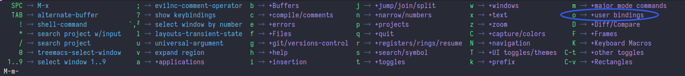
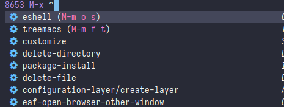
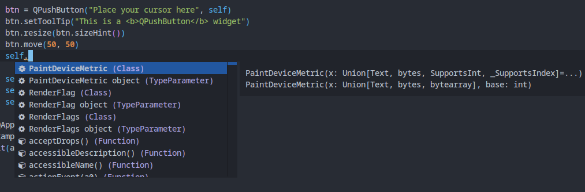

这是一个 Spacemacs 入门教程，旨在让你在尽量在两个星期内熟悉 Spaecmacs，学会使用 Spacemacs 的各种操作，并在最后配置出一个符合自己使用习惯的 Spacemacs。
另外，作者本人也是一个 Spacemacs 的初学者，所以这不但是大家的学习过程，也是我自己的学习过程，教程中的错误和需要改进的地方，望大家积极指出，我会及时进行修改😉
GitHub 项目地址: https://github.com/liuzhijun-source/spacemacs-14-days/ Gitee 镜像地址: https://gitee.com/liuzhijun-source/spacemacs-14-days/ GitHub Page: https://liuzhijun-source.github.io/spacemacs-14-days/
注: 本教程是 Spacemacs 教程而不是 Emacs 教程，建立在你已经学会使用 Emacs 的基础上！
在开始之前，确保你的电脑上已经安装了 Emacs，如果是 Windows 系统的话，确保你已经添加了 HOME 环境变量 如果不知道 Windows 系统怎么添加 HOME 环境变量，可以点击这里
如果你的电脑安装了 git 的话，打开 PowerShell，然后执行以下命令来安装 Spacemacs：
shell
git clone https://github.com/syl20bnr/spacemacs $home/.emacs.d
因为要从 GitHub 下载，速度可能有点慢。如果速度太慢的话，可以执行下面这条命令：
shell
git clone -b develop https://codechina.csdn.net/mirrors/syl20bnr/spacemacs.git $home/.emacs.d
Windows 系统默认并没有安装 git，如果你的电脑上没有安装 git 的话，你可以采用下面的方式来手动安装。
可以在 Spacemacs 的 GitHub 仓库下载 Spacemacs 的源码压缩包，如果速度太慢的话，可以在 Spacemacs 的镜像源仓库下载，下载完成后解压缩并将文件夹命名为.emacs.d，然后放置到主目录下即可。
Linux 和 macOS 通常都默认安装了 git，打开终端，然后执行下面的命令来安装：
shell
git clone https://github.com/syl20bnr/spacemacs ~/.emacs.d
如果速度太慢的话，可以用以下这条命令：
shell
git clone -b develop https://codechina.csdn.net/mirrors/syl20bnr/spacemacs.git ~/.emacs.d
安装完 Spacemacs 之后，下次启动 Emacs 就会自动从 Melpa 下载包了，但是 Melpa 的服务器在国外，因为包下载的速度会特别慢，要等很久，可以用更改镜像源的方法解决，我们这里使用清华的镜像源。
启动 Emacs 时，它会问你想要使用那种编辑模式（Vim或Emacs），根据自己的喜好选择好之后回车即可，然后会询问你是想安装标准版的 Spacemacs 还是精简版的 Spacemacs minimal，同样自己选择之后回车即可。此时应该会开始下载包了，并且会在主目录下生成一个.spacemacs文件。这时通过任务管理器或系统监视器关闭 Emacs，然后在.spacemacs中找到dotspacemacs/user-init()，然后在里面添加下面的代码：
lisp
(setq configuration-layer-elpa-archives
'(("melpa-cn" . "http://mirrors.tuna.tsinghua.edu.cn/elpa/melpa/")
("org-cn" . "http://mirrors.tuna.tsinghua.edu.cn/elpa/org/")
("gnu-cn" . "http://mirrors.tuna.tsinghua.edu.cn/elpa/gnu/")))
添加完成后应该如下图所示：

此时再启动 Emacs 就会从清华源开始下载包，速度应该会快很多，然后耐心等待它下载完就可以了。全部下载完之后，重启一下 Emacs，就可以看到 Spacemacs 的 Logo 了。
在阅读本节前，确保你已经正确安装好了 Spacemacs，且启动之后没有任何报错。
在上一节安装 Spacemacs 时，Spacemacs 让我们选择自己的编辑模式（Vim和Emacs），安装完 Spacemacs 后如果我们对当前的编辑模式不满意，可以在.spacemacs文件中进行更改。
打开 .spacemacs 文件，按 C-s ，搜索editing-style，可以找的编辑模式的配置选项。可选的值有 Vim、Emacs、Hybrid，可以根据自己的喜好选择，也可以根据官方文档进行进一步的配置。
在 Spacemacs 中，SPC（即空格键）是 Vim 编辑模式下默认的 leader 键，如果你使用 Emacs 编辑模式，默认的 leader 键是 M-m ，本教程统一使用 SPC 表示
按 SPC f e d 可以快速打开 .spacemacs 文件，按 C-s 搜索line-numbers可以找到一个叫做dotspacemacs-line-numbers的选项，这个选项可以显示行号并设置行号的风格，可选的值有visual、relative还有t，visual 和 relative 都是显示相对行号，且两者并没有什么区别，t 则是显示普通的行号，可以根据自己的需要选择。
按 C-s 搜索font一般可以找到一个名为dospacemacs-default-font的选项，更改双引号中的内容可以修改字体，Spacemacs 默认的字体是 Source Code Pro，可以根据需要改成自己喜欢的字体。
Windows 系统默认并没有安装 Source Code Pro 字体，可以搜索进行安装，或者更改为自己喜欢的字体，Windows 一般使用 Consolas 字体。
:size选项可以更改字体的大小，不同的字体大小不一樣，所以个值并不是固定的，得根据自身需要选择，:weight可以修改字体的字重，:width可以修改字体的宽度。
另外，大多是等宽字体并不包含中文字体，因此 Emacs 中的中文大多会以宋体来显示，可以用下面的方法单独设置中文字体。
在 .spacemacs 中搜索user-config定位到用户配置，然后添加下面的代码：
lisp
(dolist (charset '(kana han cjk-misc bopomofo))
(set-fontset-font (frame-parameter nil 'font) charset
(font-spec :family "Your Font"
:size 14)))
请将Your Font修改为你自己的中文字体，其中:size可以更改字体的大小
在 .spacemacs 搜索theme可以找到一个叫做dotsapcemacs-themes的选项，在里面可以选择自己想要的主题，最靠前的是默认主题，键入主题包名后，下次启动 Emacs 时会自动下载并安装主题，可以根据自己的喜好选择。常见的主题有：
Spacemacs 默认提供了很多的可配置选项，如果想像普通的 Emacs 那样增添自己的配置，可以在 .spacemacs 中搜索user-config，可以定位到一个叫做dotspacemacs/user-config的选项，将你的配置填写在里面即可，比如显示时间的配置(display-time-mode t)，添加完成后代码一般如下所示：
lisp
(defun dotspacemacs/user-config ()
"Configuration for user code:
This function is called at the very end of Spacemacs startup，after layer
configuration.
Put your configuration code here，except for variables that should be set
before packages are loaded."
(display-time-mode t)
)
本文将用一种通俗的方式讲解 layer 是什么，并将会添加一些常用的 layer 和其配置。
layer 的中文意思是“层”，Spacemacs 中的一个 layer，即一个配置层。配置层的大体含义是将多个l你需要的包（插件）和它们的配置等打包到一个地方，就是层。 如果需要使用 Spacemacs 中对应的功能，就只需要添加对应的配置层就可以了。
如果你需要把一层楼修建成厨房，你需要买冰箱、锅、洗菜台、切菜板等好多好多的东西，而且都需要自己去布置；但是，你也可以直接购买已经装修成一个厨房的一层楼，这对你来说很省事，很方便。
layer 也是如此，它极大的简化了 Emacs 用户安装和使用配置包的过程。举个例子，如果你希望 Emacs 可以编写 Python 程序， 你需要安装对应的语法检查工具、自动补全后端和对应的语言服务器而使用 layer 的话，你只需要在 .spacemacs 文件的某个地方写上 python 这个词就可以了。
同时，得益于高度整合的功能，layer 也更便于管理，无论是安装还是卸载，都只需要在对应的地方添加或删除某些文本。
有关于 layer 的更多信息，可以查看官方文档
在 .spacemacs 文件中找到dotspacemacs-configuration-layers，将自己需要的 layer 填写在里面，下次启动 Spacemacs 时就会开始安装了，
以下是对一些常用的 layer 的介绍
提供自动补全功能，添加 lsp 和对应语言的支持之后，在编写代码时会有相应的语法提示。建议添加
优化 Emacs 的一些常用操作，可以使 Emacs 用起来更顺手。建议添加
提供对 elisp 语言的支持。建议添加
提供了对微软语言服务器协议的支持，添加了这个 layer 和对应的语言支持之后，在编写代码时将会有更智能的语法提示。建议添加
提供了对 markdown 的支持，包括生成预览和目录，如有相关需要，建议添加
提供了多光标支持，即在编辑文件时可以使用多个光标，可以根据自己需要添加
提供了 Spacemacs 中的 org 模式，提供了很多丰富的功能，如有需要，建议添加
提供了针对许多语言的语法检查。建议添加
提供了拼写检查功能。建议添加
提供了文件导航功能和文件操作支持，可以在 Spacemacs 左侧显示当前目录下的文件。建议添加
提供了和 treemacs 相似的功能，但相比于 treemacs，功能较少，两者之间可以根据自己需要选择
一个重量级的补全解决方案，在搜索文件、文本或者管理项目和 layer、输入命令时都提供了强大的补全功能。建议添加
和 helm 相似，但更加的轻量。建议添加
值得注意的是，如果同时添加 helm 和 ivy，helm 将会被 ivy 替换掉，两者不能共存，因此要根据自己的需要进行取舍，但不论是 helm 还是 ivy，强烈建议在两者之中选择一个，这将会对你使用 Spacemacs 提供极大的便利
提供了对 git 的强大支持，如有相关需要，建议添加
提供了对中文的强大支持，包括但不限于输入法、词典、更好的中文显示等，如有需要，建议添加
提供了更好的 unicode 字符支持，包括更好的字体显示和字体连字支持
提供了 Emacs Application Framework的支持，添加此 layer 之后可以使用功能完成的 Chrome 浏览器、PDF 阅读器、视频播放器等
此外，还有一些针对常用编程语言的 layer，在你打开相应的文件时，Spacemacs 将会询问你是否需要添加相应的 layer，可以根据自己的需要添加
另外，添加相应的语言支持后，会列出可以使用的语言服务器列表供你安装，一些语言服务器并不可以通过 Emacs 安装，如果你想使用别的语言服务器， 你可以通过查看 lsp-mode 的官方文档获取安装方法
在你安装一个相应语言的服务器之后，Spacemacs 将不会再询问你是否需要安装对应的语言服务器。完整的 layer 列表，请查看 Spacemacs layers list，有关对应 layer 的配置，同样可以参考这份文档。
本节将介绍一些使用頻率较高的 layer 的配置
本版块将会长期更新
以下操作请在 treemacs 缓冲区内完成，可以按 SPC 0 来切换到 treemac 缓冲区
在 treemacs 中可以使用 C-n 和 C-p 来上下移动选中文件，按回车键即可打开一个文件
| 按键 | 对应的操作 | | :--: | :---------------------: | | cf | 新建文件 | | cd | 新建目录 | | R | 重命名 | | q | 隐藏/显示 treemacs 目录 | | Q | 退出 treemasc | | ov | 垂直分屏来打开一个文件 | | oh | 水平分屏来打开一个文件 | | th | 隐藏或显示隐藏的文件 | | m | 移动一个文件 |
另外， SPC f t 可以快速打开 treemacs
treemacs 提供了一个简单而强大的文件导航目录，通常情况下，它会自动根据当前的文件来决定应该显示哪个 目录，但大多数时候，treemacs 并不会这么做，因此你需要手动切换目录。
| 按键 | 对应的操作 | | :--: | :--------------: | | M-H | 导航到上一级目录 | | M-L | 导航到下一级目录 |
注意，H 和 L 是大写的，因此你还需要同时按下 Shift！
或者，你可以使用 M-x treemacs-root-up 和 M-x treemacs-root-down 来移动目录
在你删除或者新建一些文件之后，treemacs 不会立即刷新当前的目录试图，你需要手动刷新。如果希望自动 刷新的话，请更改 dotspacemacs-configuration-layers 中的 treemacs
lisp
(treemacs :variables treemacs-use-filewatch-mode t)
你可以使用 all-the-icons 主题来显示 treemacs 上的图标，配置方式同上
lisp
(treemacs :variables treemacs-use-all-the-icons-theme t)
如果你同时修改了“自动刷新”和“主题”两个配置，修改后的代码应该类似于：
lisp
(treemacs :variables treemacs-use-filewatch-mode t
treemacs-use-all-the-icons-theme t)
在打开相应的程序文件后，你可以通过输入 M-x lsp 手动来安装对应的语言服务器，这种方法适用于无法自动 安装语言服务器的情况
启用 lsp 并安装对应语言的支持之后，通常会在相关的代码文件上显示显示当前文件的路径和图标，如果你想要
隐藏的话，可以在 user-config 中添加lsp-headerline-breadcrumb-enable nil，你也
可以通过lsp-headerline-breadcrumb-segments来进行更细微的调整
project显示当前项目的名称file显示当前文件的名称path-up-to-project显示当前项目的路径symbols显示图片可以修改为下面这样
lisp
(setq-default dotspacemacs-configuration-layers
'((lsp :variables lsp-headerline-breadcrumb-segments '(symbols))))
;; 只显示图标
;; 这只是用于在文档中说明的代码配置示例，如果你需要修改相关的设置，你应该在
;; .spacemacs 中的 dotspacemacs-configuration-layers 列表里
;; 把 lsp 改为 (lsp :variables lsp-headerline-breadcrumb-segments '(symbols))
;; 且今后关于在 layer 列表中的配置选项，都会以这种方式呈现
或者
lisp
(setq-default dotspacemacs-configuration-layers
'((lsp :variables lsp-headerline-breadcrumb-segments '(project file))))
;; 显示项目名称和文件名称
默认情况下，lsp 会统计当前项目下所有的错误，如果要禁用，应该修改lsp-modeline-code-actions-enable
lisp
(setq-default dotspacemacs-configuration-layers
'((lsp :variables lsp-modeline-code-actions-enable nil)))
此外，可以通过使用lsp-modeline-code-actions-segments进行更细微的修改
icon显示相应的错误的图标，如代码错误显示为🔴，而警告则显示为橙色圆点name显示出现错误的代码的名称count显示出现错误的代码的数量lisp
(setq-default dotspacemacs-configuration-layers
'((lsp :variables
;; default segments
lsp-modeline-code-actions-segments '(count icon))))
syntax-checking 使用 flycheck 作为语法检查工具，默认情况下，flycheck 会在一些具有检查意义的 地方提供语法检查，如各种各样的源代码文件 javascrpt、java、c/c++ 等，如果你希望它在 lisp 等源代码 文件上也提供语法检查的话，可以在 user-config 中添加：
lisp
(global-flycheck-mode 1)
本节将会详细讲解 .spacemacs 文件中的大部分配置，读者可以根据自己的需要自行修改
.spacemacs 一般会自动生成在主目录下，这个文件是配置 Spacemacs 的入口，有关于 Spacemacs 本身的配置基本都能在里面进行修改，用户设置同样在这个文件中修改。
.spacemacs 中，内容一般被分为以下几个部分，每个部分都封装在一个函数中：
dotspacemacs/layers在这里可以声明一些 layer，以及删除、增添一些包，在这里还可以调整 Spacemacs 加载时的一些行为
dotspacemacs/initSpacemacs 绝大部分的配置都位于此，你可以在此修改配置中可选的选项，但绝对不能将自己的用户配置代码添加在这里
dotspacemacs/user-init一般在这里设置你需要使用的 elpa 源
dotspacemacs/user-config在这里可以添加你的用户配置代码，你自己的定义的大部分配置一般都在这里完成
dotspacemacs/emacs-custom-settingsSpacemacs 自己生成的配置，同样不建议自己去修改
接下来开始讲解，可配置的选项按出现的位置进行排序（从上到下）
该部分主要是关于 Spacemacs 中 layer 的声明和配置，和 Spacemacs 安装软件包的行为的配置
dotspacemacs-distribution可选的值有 spacemacs-base 和 spacemacs，spacemacs-base 可以理解为是一个精简版 的 Spacemacs，默认为 spacemacs ，即一个完整的 Spacemacs
dotspacemacs-enable-lazy-installation惰性安装： 本配置的主要功能是当你打开一个文件时，spacemacs 会自动根据文件的类型安装相应的 layer,就比如打开一个 java 源代码文件，spacemacs 便会询问你是否需要安装对应的 layer，类似于 vscode，当你打开一个文件时，将会询问你是否需要安装相应的扩展
该选项可选的值有 all、unused 和 nil，all 将会惰性安装所有支持惰性安装的 layer，unused 只会安装你没有使用的 layer，nil 将禁用惰性安装这一功能，默认为 unused
dotspacemacs-ask-for-lazy-installation对应于上面的选项，在安装相应的 layer 前会询问你是否需要安装，可选的值有 t 和 nil，默认为 t
dotspacemacs-configuration-layer-path如果你配置了自己的 layer，但是却把它放在了 .emacs.d 以外的文件夹中，为了让 spacemacs 可以找到这个 layer，就需要配置这个选项。Spacemacs 将会额外从这个目录中寻找 layer。值为一个目录的路径，结尾要带上“/”
dotspacemacs-configuration-layers声明 layer 的地方，在此声明过的 layer 将会在下次启动 Spacemacs 时自动安装，也可以进行一些 layer 的配置，如：
lisp
dotspacemacs-configuration-layers
'(html
python
auto-completion
better-defaults
emacs-lisp
(lsp :variables lsp-headerline-breadcrumb-enable nil)
markdown
org
syntax-checking
(treemacs :variables treemacs-use-all-the-icons-theme t)
(ivy :variables ivy-enable-icons t)
(eaf :variables eaf-browser-dark-mode nil
eaf-browser-default-search-engine "bing"
eaf-browser-enable-adblocker t
eaf-browse-blank-page-url "https://cn.bing.com"
browse-url-browser-function 'eaf-open-browser)
)
dotspacemacs-additional-packages添加单独的包的地方将包名填入括号中后，下次启动 Spacemacs 时就会自动开始安装，也可以在此进行一些简单的包配置。不在此选项中出现的包将会在下次启动 Spacemacs 被删除，因此不建议使用 package-install 安装包
dotspacemacs-frozen-packages将包名添加到这个选项中后，该包将会禁止更新
dotspacemacs-excluded-packages主要用于移除一些 layer 中你不想要的包，填写在这里这里的包将会被移除
dotspacemacs-install-packages定义了 Spacemacs 安装包的一般行为，可选的值有 used-only、used-but-keep-unused 和 all
关于包的定义： 你使用的包：你声明过的 layer 中包含的包和在 dotspacemacs-additional-packages 中添加的包。 你没有使用的包：没有填写在 dotspacemacs-additional-packages 中的包，这些包将会被删除。
used-only 会安装你使用的包，而删除那些你没有使用的包，used-but-keep-unused 会安装你使用的包，但不会删除你没有使用的包，all 会安装 Spacemacs 支持的所有包
这里包含了 Spacemacs 中绝大部分的可配置选项，你不应该把你自己的配置代码添加在这里，并且这个部分的内容会在 Spacemacs 启动的最开始生效。注：有部分不影响使用的配置没有讲到（其实是因为不知道）
dotspacemacs-elpa-https在访问 elpa 存储库时使用 https 域名，可选的值有 nil 和 t，默认为 t，建议为 t
dotspacemacs-elpa-timeout设置访问 elpa 的超时时间，单位为秒，默认值为5
dotspacemacs-use-spacelpa可选的值有 t 和 nil，如果是 t，将默认从 Spacelpa 安装稳定的包，如果是 nil，将默认从 Melpa 安装最新的包，默认为 nil
dotspacemacs-verify-spacelpa-archives可选的值有 t 和 nil，如果是 t 并且如果你开启了从 Spacelpa 安装包，则会验证下载的包的签名，默认为 t
dotspacemacs-check-for-update可选的值有 t 和 nil，如果是t，并且你使用的 Spacemacs 不是 develop 分值的话，将会在启动时检查更新。默认为 nil
注意，我们默认安装的 Spacemacs 就是 develop 分支，develop 不能通过这个来更新 Spacemacs 版本，我们也没有必要频繁的更新 Spacemacs。同时，我也并不推荐使用 master 分支的 Spacemacs，因为 master 分支的 Spacemacs 和文档距离上次更新都已经将近五年了。。。
dotspacemacs-editing-style设置 Spacemacs 的编辑风格，可选的值有 vim、emacs 和 hybrid，hybrid 更像是 vim 和 emacs 的结合体，它将 vim 的插入模式改为了 emacs 的编辑模式，你同样可以通过 :variables 来修改一些默认的选项
dotspacemacs-startup-buffer-show-version在启动时是否显示 Spacemacs 和 Emacs 的版本，可选的值有 t 和 nil，默认为 t
dotspacemacs-startup-banner设置 Spacemacs 启动时显示的 Logo，可选的值有 official、random、nil 和你自己图像的路径，这个路径必须是一个字符串。默认为 offical，如果是 nil，则不显示 Logo
dotspacemacs-statup-lists设置 Spacemacs 启动时显示的列表，值有 recents、recent-by-project、bookmarks、projects、agenda、todos，可以显示最近打开的文件、项目、书签和 todo 等，接受一个列表，项后面的数字是该项目显示的长度，修改为 nil 可以不显示
dotspacemacs-startup-buffer-responsive可选的值有 t 和 nil，如果是 t 的话，那么你就可以调整 buffer 的大小，默认为 t
dotspacemacs-show-start-list-numbers在开始界面的列表的项前面显示数字（如果你开启了显示列表的话），这样的话，直接按数字就可以打开对应的文件、项目等，可选的值有 t 和 nil，默认为 t
dotspacemacs-startup-buffer-nulti-digit-delay按下数字键后的最小延迟时间（即等待时间），单位为秒，默认为 0.4
dotspacemacs-new-empty-buffer-major-mode打开一个新的缓冲区后默认的模式，可选的值有 text-mode 和 nil，如果设置成 nil，则使用基本模式，默认为 text-mode
dotspacemacs-scratch-mode用来设置 scratch 这个 buffer 默认的模式，可选的值有 text-mode 和 nil，默认为 text-mode
dotspacemacs-scratch-buffer-persistent可选的值有 t 和 nil，如果是 t，你在 scratch 缓冲区写下的所有内容都会被自动保存，默认为 nil
dotspacemacs-scratch-buffer-unkillable可选的值有 t 和 nil，如果是 t，kill-buffer不会 kill 掉 scratch 缓冲区，而是 bury（机翻是埋葬？我不好怎么翻译） 它，默认为 nil
因为要讲的东西实在太多，一部分内容迁移到了 Day06...
dotspacemacs-initial-scratch-message用来自定义 scratch 缓冲区上显示的内容，可选的值有 nil 和一个字符串，就比如: "Welcome to Spacemacs!"
默认为 nil
dotspacemacs-themes用来设置 Spacemacs 的主题，Spacemacs 默认使用该列表中的第一个主题，可以按SPC T n来切换这个列表中的主题
如果使用的是 Emacs 的编辑模式，SPC(leader 键)应该是
M-m！
dotspacemacs-mode-line-theme用来设置 Spacemacs 中 mode-line 的主题，就是 Spacemacs 下面的那根长条，可选的主题有
custom 是用来自定义的主题，vanilla 是原生 Emacs 默认的主题，显示效果如下
显示效果会受主题和字体的影响
spacemacs:

all-the-icons:

doom:

vim:

vanilla:

关于 custom 主题的自定义和 mode-line 的一些值的配置，这里就不过多赘述了，想要了解的话,可以参见官方文档
dosspacemacs-colorize-cursor-according-to-state可选的值有 t 和 nil，如果是 t 的话，光标的颜色会和 Spacemacs 中的状态的颜色一致，Spacemacs 中常用的状态一般有
默认值为 t
dotspacemacs-default-font用来设置 Spacemacs 的字体，:size可以用来调整字体的大小，如果值是一位小数的话，则根据字号来调整字体的大小，如果是整数的话，则根据像素多少来调整字体的大小，默认为 10.0，如果你想用整数的话，一般 14 是标准的大小，依据你使用的字体而定。
:weight用来调整字体的字重，:width用来调整字体的宽度，:weight用来调整字体的高度
dotspacemacs-leader-key用来设置 leader 键，一般用于 Vim 和 Hybrid 编辑模式，leader 键主要用来自定义自己的快捷键。默认为 "SPC"
dotspacemacs-emacs-command-key用于在 Vim 和 Hybrid 编辑模式中，按下 leader 键后，用来代替 Emacs 中 M-x 的键，默认为"SPC"
dotspacemacs-ex-command-key用来设置 Vim 编辑模式下 Ex 命令使用的键，默认为 ":"
dotspacemacs-emacs-leader-key用来设置 Emacs 的编辑模式和 Vim 的插入模式下的 leader 键，默认为 "M-m"
dotspacemacs-major-mode-leader-key用来设置一个快捷键，相当于按下<leader 键> m，如 SPC m ，可以用来方便一些操作，默认为 ","
dotspacemacs-major-mode-emacs-leader-key使用 Vim 编辑模式或者 Hybrid 编辑模式后，在 Emacs 模式或者插入模式时下使用的 leader 键，这样的话使用 leader 键就不必再进入正常模式后再使用。如果是从终端使用 Spacemacs，默认是 C-M-m ，如果是以图形化界面启动，则默认是 M-RET （RET 就是回车键），另外， M-RET 在终端模式和图形化界面中都可以使用。
dotspacemacs-distinguish-gui-tab可选的值有 t 和 nil，如果是 nil，在图形化界面的 Spacemacs 中，命令可以被绑定到
dotspacemacs-default-layout-name用来设置 Spacemacs 默认的布局的名称，默认值为"Default"
布局就是你打开的 buffer
dotspacemacs-display-default-layout在 Spacemacs 的 mode-line 中显示当前布局的名称，默认值为 nil
dotspacemacs-auto-resume-layouts可选的值有 t 和 nil，如果是 t 的话，下次启动 Spacemacs 时将会恢复你上次退出 Spacemacs 时的布局，即重新打开你上次打开的所有 buffer
dotspacemacs-auto-generate-layout-names可选的值有 t 和 nil，如果是 t，在创建新的 buffer 会自动生成名称，只有开启“按序号跳转 buffer”，这项功能才会生效
通常情况下，Spacemacs 的 mode-line 最左边会显示 buffer 的序号，可以通过按 M-m <序号> 来进行跳转
dotspacemacs-large-file-size用来设置打开的文件超过多大的大小时，Spacemacs 将会显示打开的文件的大小，单位为 MB，默认值为 1。
dotspacemacs-auto-save-file-location用来是设置自动保存的方式，可选的值有 original 和 cache，original 会直接自动保存文件，cache 会把文件自动保存到当前目录下的另一个文件名中，通常以filename~.***来命名，设置为 nil 可以禁用自动保存。默认值为 cache
dotspacemacs-max-rollback-slotsTODO...
dotspacemacs-enable-paste-ransient-stateTODO...
在 Spacemacs 中按下 leader 键后，等待一会应该会出现如下图的界面，其中包括user bindings，这是专门用来给用户定义快捷键的区域。如果你想要方便的执行一些函数，而这些函数又是 Spacemacs 本身不带有的或者不符合你口味的，你可以试试用这个来定义你自己的快捷键。

下面举两个例子
在 .spacemacs 文件中修改一些配置后，通常需要重启 Spacemacs 才会生效，但按 C-x C-c 退出 Spacemacs 再打开实在麻烦。restart-emacs可以快速重启 Emacs，且 Spacemacs 中已经定义好了相关的快捷键 M-m q R ，但是可能不太好按。现在上文的 M-m o 可以派上用场了，Emacs 中一般可以用下面的方式来绑定一个命令到一个键
lisp
(global-set-key (kbd "<key>") '<function>)
其中 restart-emacs绑定到 M-m o r 中去，那么我可以
lisp
(global-set-key (kbd "M-m o r") 'restart-emacs)
然后就可以用 M-m o r 来重启 Spacemacs 了。同时，之前的快捷键也并没有失效
如果添加了 ivy 这个 layer，那么你现在随意在某个文件按下 C-s 就可以进行更好的全文搜索，helm 中的helm-swoop同样可以实现这个功能，你可以按M-x helm-swoop，但是更好的方法是将它绑定一个键。ivy 可以直接按 C-s 进行全文搜索是因为 layer 中已经添加了键绑定相关的配置，我们可以手动为helm-swoop绑定一个键，方法同上
lisp
(global-set-key (kbd "C-s") 'helm-swoop)
现在可以使用 C-s 调用helm-swoop进行全文搜索了
事实上，leader 键的内容远远不止这些，这还只是冰山一角，我不可能讲得面面俱到，否则这个教程也没有存在的意义。更多的内容，还需要你自己去探索
如果你的 ivy 没有添加任何配置，按下M-x后应该会出现这个符号“^”（如下图），有了它，你就可以通过书写正则表达式来查找命令，如果你不需要的话，可以用下面的方法关掉

ivy-initial-inputs-alistcounsel-M-x 这一项，然后按左边的 DEL 删除即可Emacs Server 可以在你的内存中建立一个类似于服务器的东西（把你的配置加载到内存中），这样的你要是想使用 Emacs 就可以直接开启一个 Emacs 客户端来连接到这个服务器，而不需要打开 Emacs 后再加载一边配置，可以极大的提高 Emacs 的启动速度，通常情况下一秒不到便可启动！
在终端中运行
shell
emacs --daemon
接着便会开始加载配置，加载完成后，使用emacsclient命令可以直接连接到刚才加载的配置，但后面通常用带上文件名，如: emacsclient test.sh。使用emacsclient -c可以直接以图形化界面运行 Spacemacs。演示如下:

下面这条命令可以让系统在开机时自动建立起一个 Emacs Server，这样的话就不必每次都执行emacs --daemon这条命令，可以直接使用emacsclient
shell
systemctl --user enable emacs
你还可以直接将 emacsclient 设置为终端的默认编辑器
shell
export EDITOR='emacsclient -c'
.spacemacs 文件中同样有相关的配置，如果你使用的系统无法使用上面的命令来自动启动 Emacs Server，可以在 .spacemacs 修改下面的配置，这会在 Spacemacs 启动时自动开启一个 Emacs Server
lisp
(setq-default dotspacemacs-enable-server t)
如果想要关闭已经开启的服务器，可以从 emacsclient 启动 Spacemacs，然后执行SPC q q来退出 Emacs 并关闭掉服务器
本节主要讲述 Spacemacs 中有关于代码编写等方面的使用技巧和操作优化
Spacemacs 使用 Projectile 管理项目
在你打开一个文件的时候，Spacemacs 应该会自动这个文件所在的目录添加为你的项目，你可以在开始界面的 Project 一栏找到你的项目，也可以使用 SPC p p 来切换项目，使用 SPC p f 可以在项目里查找文件，你也可以使用 M-x projectile-add-known-project 来手动添加项目。Spacemacs 中所有的 Projectile 操作基本都在 SPC p 中，读者可以自行查看
Treeemacs 同样可以进行项目管理，但是它并不会自动把当前项目添加到侧边栏中，你需要手动添加： M-x treemacs-add-project-to-workspacemacs
Spacemacs 的 auto-completion layer 默认使用 Company-mode 作为补全后端
Spacemacs 中出现自动补全建议栏时，默认使用 Tab 补全代码中公共的部分和移动到下一个补全项，使用回车键来选中当前的项，如果你更习惯使用 Tab 来直接补全的话（即按 Tab 和回车都是直接补全自动完成列表的第一个项），你可以使用下面的代码：
lisp
(setq-default dotspacemacs-configuration-layers
'((auto-completion :variables auto-completion-tab-key-behavior 'complete)))
你还可以让完成列表根据用户的使用习惯来进行排序，不过可能降低其速度
lisp
(setq-default dotspacemacs-configuration-layers
'((auto-completion :variables auto-completion-enable-sort-by-usage t)))
如果在写代码时需要使用帮助文档，可以使用 auto-completion-enable-help-tooltip
lisp
(setq-default dotspacemacs-configuration-layers
'((auto-completion :variables auto-completion-enable-help-tooltip t)))
;; 设置为 t 可以在选中一个完成项自动显示其文档，将其改为 `manual` 后
;; 按 M-h 或 C-h 才会在旁边显示帮助文档
打开文档后，你可以使用 C-M-v 来向下翻看文档， C-M-V 则为向上
使用 Company-box 可以让 Company 使用更加现代的外观和更好的文档显示支持（我的 KDE Plasma 桌面上默认的文档显示起来会很模糊）
lisp
(setq-default dotspacemacs-configuration-layers
'((auto-completion :variables auto-completion-use-company-box t)))
效果如图：

关于 Company-box 又有一大堆的说明，这里就不过多赘述了。另外，可以使用 SPC m l 来查看一个 layer 的帮助文档，关于 auto-completion 的其他技巧，大家可以自行探究
一般情况下，一行代码的长度不宜超过 80 个字符，如果你希望在第 80 列显示一条竖线来提醒你，可以使用 M-x spacemacs/toggle-fill-column-indicatorSPC t f，如果需要全局启用，在 user-config 中下面的代码，需要注意的是，加入这行代码后，Spacemacs的开始界面也会显示这条竖线
lisp
(display-global-fill-column-indicator-mode 1)
Emacs 的 buffer 切换不够直观、方便，可以使用 tab-bar-mode 解决，它会在 Emacs 顶部显示一个标签栏。Spacemacs 中默认已经安装了这个包
可以采取命令或者使用鼠标的方式来完成标签栏的切换，Spacemacs 默认并没有绑定相关的快捷键，大家可以自行绑定
Emacs 有自己的错误跳转函数，兼容 flycheck、flymake
Spacemacs 默认使用 flycheck 进行语法检查，以下为 flycheck 的跳转函数
默认的跳转快捷键可能有点麻烦，你可以自己绑定相关的键，如：
lisp
(global-set-key (kbd "M-n") 'flycheck-next-error)
(global-set-key (kbd "M-p") 'flycheck-previous-error)
如果想要显示错误列表，可以使用 M-x flycheck-error-list-mode
spacemacs 附带了 quickrun，可以直接编译运行代码，支持大部分的语言。直接使用 M-x quickrun 即可，或者 SPC x x 。使用 quickrun 运行的程序，会在10秒后自动关闭，可以通过设置quickrun-timeout-seconds来防止它关闭：
lisp
(setq quickrun-timeout-seconds nil) ;; 将该变量设置为 nil
程序运行完之后，还会留下一个 buffer 不会自动关闭，可以按 C-g 将其关闭。
Emacs 的 compile 命令同样可以编译运行代码文件，不过可能需要你手动输入命令
默认的终端有 eshell 和 shell，但两者都有些许一言难尽的地方，如果需要更好的终端支持，可以添加 shell 到你的 layer 中
lisp
(setq-default dotspacemacs-configuration-layers
'(((shell :variables
shell-default-height 30
shell-default-position 'bottom))))
然后，SPC ' 即可在 Spacemacs 中打开系统的 shell。另外，SPC ! 可以在 minibuffer 中临时执行 shell 命令
如果你使用的 Linux 发行版不能使用系统的 Fcitx 输入法，一般可以使用 ArchWiki 中的办法解决，也可以使用 Spacemacs 中的 Chinese Layer 解决。使用方法可以参见其文档（SPC h l chinese RET）
常用的 Emacs 输入法是 pyim 和 emacs-rime
chinese layer 中已经附带了 pyim
以上两个输入法都支持自动切换中英文，安装方法和配置方法可以参见这两个输入法的文档
我现在使用的是 emacs-rime
lisp
(setq rime-disable-predicates
'(rime-predicate-prog-in-code-p
rime-predicate-punctuation-line-begin-p
rime-predicate-space-after-cc-p
rime-predicate-current-uppercase-letter-p
rime-predicate-after-alphabet-char-p))
这个配置会使 emacs-rime 在以下情况切换成英文模式：
emacs-rime
lisp
(setq rime-show-candidate 'posframe)
;; 可以使 emacs-rime 用 posframe 绘制候选框，可选的值有 nil、minibuffer、message、popup、posframe、sidewindow
;; 具体可参见文档
如果你不知道怎么配置 Rime 输入法，可以选择直接使用现成的 Rime 配置，如 Clover，这是一个很优秀的 Rime 输入方案。emacs-rime 不会使用系统 Rime 输入法的配置文件，它有自己的配置文件，可以通过 M-x rime-open-configuration 打开，安装好 Clover 之后，在 emacs-rime 的配置文件中添加下面的内容就可以在 emacs-rime 中使用 clover 输入方案了，其中 "menu/page_size" 用来设置候选词的个数
yaml
patch:
"menu/page_size": 7
schema_list:
- schema: clover
Q: 为什么要出这个教程？
A: 因为国内较为完整的 Spacemacs 中文教程较少，官方文档全是英文，可能会有很多人看不懂，而且因为中英文对于各种设置选项的叫法不同，所以看英文文档也有点吃力，于是为了帮助一些喜欢 Emacs 和 Spacemacs 的小伙伴，便催生了我制作这个教程的想法。
Q: 这个教程主要讲些什么？
A: 因为作者本人也是个 Emacs 的初学者，所以本教程并不会涉及 Elisp，而是主要面向初学 Spacemacs 的各种配置、自定义、用法等面向 Spacemacs 新手最直接、最需要的问题，Spacemacs 的功能特别多、可自定义的选项也特别多，但并不是所有人都能熟练的使用。我会站在初学者的角度，去审视初学者的问题。解决人们学习使用 Spacemacs 上遇到的 各种问题，是本教程的首要目标。
Q: 我有别的关于 Spacemacs 的问题，可以在哪里寻求帮助？
A: 可以查看 Spacemacs 的官方文档，关于 Layer 的问题一般可以在 Spacemacs layer list中找到，且本教程许多内容也是基于官方文档制作，你也可以通过提交 issue 的方式来帮助改进本教程，或通过 fork 本仓库来提交一些你改进过的内容。